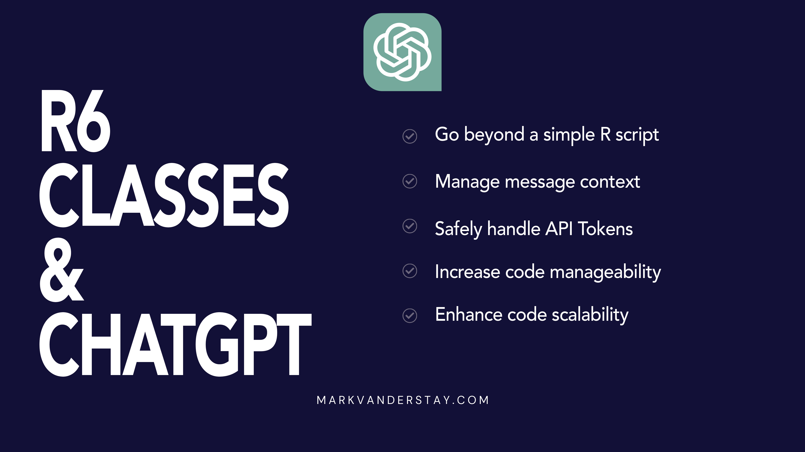

Working with the OpenAI ChatGPT API in R using R6 Classes
Unlike many examples you may come across online, this blog post does not demonstrate how to interact with the OpenAI ChatGPT API using a basic R script. Instead, I’ll demonstrate a more sophisticated and structured approach using R6 classes, highlighting how it can make your scripts cleaner, more organised, and more maintainable.
Most tutorials tend to offer a script where the process is laid out step by step, usually in a single function or a few loosely related functions. Whilst this can work perfectly well for small scripts and quick projects, as your codebase grows this can lead to code that’s difficult to maintain and understand. That’s where the object-oriented paradigm and specifically R6 classes in R come in clutch.
R6 classes are part of an R package that provides a modern, simple and clean approach to object-oriented programming in R. By encapsulating related data and methods inside classes, we can create code that’s easier to read, write, and debug. This in turn makes our work more reusable and modular.
In this post, we’re going to create two R6 classes: `MessageHistory` and `ChatGPT`.
The `MessageHistory` class will manage a list of chat messages. Each message will consist of a ‘role’ (i.e., whether it’s a user or bot message) and the ‘message’ content. The class will provide methods to add messages to the history and retrieve the last message by a given role.
The `ChatGPT` class will handle interactions with the OpenAI API. It will accept an API token and model upon initialisation and offer a chat method that will make the API request and return the response. Crucially, it will incorporate an instance of the `MessageHistory` class, demonstrating how different classes can be combined for more powerful and flexible code.
By encapsulating these distinct pieces of functionality within separate R6 classes, we ensure that our code is well-structured and clearly organised. Each class has a specific, well-defined responsibility, making it easier to understand what each part of our code does. Furthermore, our code becomes more modular, allowing different components to be reused or replaced without affecting the rest of the codebase.
This is a step towards more professional and efficient coding practices, helping you make the most of the power that the R language offers. Whether you’re a seasoned developer or new to R, I believe you’ll find this approach rewarding and valuable in your work.
You can follow along with the code at this GitHub repository.
The OpenAI ChatGPT API uses message history to maintain context for generating responses.
In an interactive chat setting, each message you send to the API should include both the message you want to generate a response to, as well as the conversation history. The conversation history usually includes alternating user and assistant messages. For example:
'messages':[
{'role':'system', 'content':'You are a helpful assistant.'},
{'role':'user', 'content':'Who won Wimbledon singles in 2022?'},
{'role':'assistant', 'content':'Wimbledon was won by Elena Rybakina and Novak Djokovic in 2022.'},
{'role':'user', 'content':'What about the doubles?'}
]Including the history allows the model to generate responses that are relevant and in context. Without the history, the model wouldn’t have enough information to provide accurate or coherent responses to user prompts.
The `MessageHistory` class in our example will handle this aspect. It maintains a list of messages (with the ‘role’ and ‘message’ attributes) in the conversation, thus helping the `ChatGPT` class manage the conversation context when making API requests.
Introducing the MessageHistory Class
Let’s begin our exploration of the OpenAI ChatGPT API using R6 classes in R with a detailed look at the first class we’re creating: `MessageHistory`. This class plays a pivotal role in maintaining the continuity of a conversation -context- when interacting with the API.
The `MessageHistory` class, as its name suggests, is responsible for handling the history of messages in our conversation with the ChatGPT model. It is designed to keep track of both the ‘role’ (whether it’s a user or bot message) and the ‘content’ of each message. By doing so, it allows us to retain context, ensuring the bot can respond appropriately to each user input.
Why MessageHistory is Necessary
When conversing with the ChatGPT API, context is crucial. The API generates responses based on the conversation history you provide; it does not store any context or conversation history itself. Therefore, the responsibility falls on us to manage the context by supplying the message history each time we make a request to the API.
This is where our `MessageHistory` class steps in. By leveraging this class, we can efficiently manage our conversation history, providing the necessary context to the API for generating meaningful responses.
This class encapsulates all the functionalities we need to handle the conversation history and can be easily integrated with our `ChatGPT` class. It’s a perfect demonstration of how we can make our code cleaner and more organised by separating different aspects of our program into distinct R6 classes.
Below is a walkthrough of this class and its methods:
library(R6)
library(rlist)
# Define the MessageHistory class
MessageHistory <- R6Class("MessageHistory",
private = list(
# Private list that will contain the history of messages
.history = list()
),
public = list(
# Public reference to the private .history list
message_history = list(),
# Constructor for the MessageHistory class which initialises the .history list
initialize = function() {
private$.history <- list()
},
# Method to add a new message to the history.
# The role and content of the message are passed as arguments.
add_message = function(role, content) {
private$.history <- c(private$.history, list(list(role = role, content = content)))
},
# Method to return the full message history
get_history = function() {
return(private$.history)
},
# Method to return the last message from a given role.
# The method iterates over the history from the end until it finds a message
# from the specified role and then returns it.
# If no message from the specified role is found, the method returns NULL.
get_last_message = function(role) {
for (i in length(private$.history):1) {
if (private$.history[[i]]$role == role) {
return(private$.history[[i]]$content)
}
}
return(NULL)
}
)
)Private Members
Within our `MessageHistory` class, we have a private member `.history`. This is a list that will store each message as an element. Each element is a list itself with two items: ‘role’ and ‘content’. It is marked as private to prevent it from being directly manipulated outside of the class methods.
Public Methods
`initialize()`: This is the constructor for the `MessageHistory` class which is automatically called when a new instance of the class is created. It initializes the `.history` list to an empty list.
`add_message(role, content)`: This method accepts two parameters - ‘role’ and ‘content’ - and appends them as a new list to the `.history` list. Each time a message is sent or received in the conversation, this method is used to add it to the history.
`get_history()`: This method returns the entire `.history` list, providing a full record of the conversation when called.
`get_last_message(role)`: This method retrieves the most recent message from a specified role. It iterates through the `.history` list backwards and returns the content of the first message it encounters from the specified role. If no such message exists, it returns NULL.
In the next section, we’ll explore the `ChatGPT` class and see how it utilises `MessageHistory` to communicate effectively with the OpenAI ChatGPT API.
Diving into the ChatGPT Class
Continuing our exploration, we come across the main character in our R script: the `ChatGPT` class. This class is responsible for interacting with the OpenAI ChatGPT API, processing the user’s messages and returning the model’s responses. The class structure aids in maintaining an organised, efficient, and sustainable codebase.
library(R6)
library(httr)
library(jsonlite)
source("./classes/MessageHistory.R")
# Define the ChatGPT class
ChatGPT <- R6Class("ChatGPT",
private = list(
# Private string that will store the API token
.api_token = NULL,
# Private string that will store the model name
.model = NULL,
# API endpoint
.url = "https://api.openai.com/v1/chat/completions",
# Instance of the MessageHistory class to store messages
.message_list = NULL,
# Private method to generate the headers for the HTTP request
get_headers = function() {
httr::add_headers(
"Content-Type" = "application/json",
"Authorization" = paste("Bearer", private$.api_token)
)
}
),
public = list(
# Public object to store the raw response from the API
response = NULL,
# Constructor for the ChatGPT class
initialize = function(api_token, model) {
private$.api_token <- api_token
private$.model <- model
private$.message_list <- MessageHistory$new()
},
# Method to send a message to the API and get a response
chat = function(message) {
# Add user message to the message list
private$.message_list$add_message("user", message)
# Prepare the body for the API request
body <- list(
"model" = private$.model,
"messages" = private$.message_list$get_history()
)
# Send the API request and store the response
self$response <- POST(private$.url, private$get_headers(), body = toJSON(body, auto_unbox = TRUE), encode = "json")
# Extract the assistant's message from the response
content <- content(self$response, "parsed")
# Add the assistant's response to our message list
private$.message_list$add_message("assistant", content$choices[[1]]$message$content)
# Return the assistant's message
return(content$choices[[1]]$message$content)
},
# Method to retrieve the conversation history
history = function(){
return(private$.message_list$get_history())
}
)
)Let’s break down this class to understand its components:
Private Members
In the `ChatGPT` class, we have private members for the API token, model name, API URL, and an instance of the `MessageHistory` class (`message_list`). These variables are marked private to protect them from direct external manipulation, a feature that helps to maintain data integrity. We also have a private method (`get_headers()`) which generates the headers required for the API request.
Public Methods
`initialize(api_token, model)`: The constructor of the `ChatGPT` class which sets the API token, model name and initializes the `message_list`.
`chat(message)`: This method takes in a user’s message, adds it to the conversation history, sends the entire conversation history to the API, adds the model’s response to the conversation history, and then returns the model’s message. This is the heart of the class where the main interaction with the API happens.
`history()`: This method returns the full conversation history, providing transparency and the ability to review the conversation as needed.
The Power of Using Classes Over Simple Scripts
You may wonder why I chose to design this interaction as an R6 class rather than writing a simple script to handle API calls. Here are four good reasons:
Encapsulation: By defining a class, we encapsulate related data and operations into a single entity. In our case, all operations related to the ChatGPT model (like setting the API token, sending a message, and getting the history) are part of the same `ChatGPT` class. This makes the code easier to understand, manage, and debug.
Code reusability and modularity: Once the `ChatGPT` class is defined, it can be easily reused in any other part of your code or even in different projects. You just need to create a new instance of the class, and all methods and properties are readily available.
Data integrity: Using classes and private members, we ensure data safety. For instance, direct modification of the API token or the message list is not allowed, thus preventing unintentional or malicious alterations.
Code expansion: As new features or changes come to the API, adapting your code becomes a breeze. You just need to modify your class definition without impacting the rest of your code. This is particularly beneficial for larger projects or when working in a team.
So the `ChatGPT` class empowers us to interact with the OpenAI API in an organised, scalable, and secure manner. The combination of `ChatGPT` and `MessageHistory` classes provides an excellent example of how we can use object-oriented programming concepts in R to interact with an API like ChatGPT.
In the next section, I’ll show you how to create an instance of this class and interact with it, bringing these concepts together into a complete and functional example.
Putting It All Together: An Example
Now that we have our `MessageHistory` and `ChatGPT` classes, let’s put them to use. The following is an example of how to create an instance of `ChatGPT` and interact with it:
# Load necessary libraries
library(R6)
source("./classes/MessageHistory.R")
source("./classes/ChatGPT.R")
# Create an instance of the ChatGPT class
chat_instance <- ChatGPT$new(api_token = Sys.getenv("<YOUR_API_TOKEN>"), model = "gpt-3.5-turbo-0301")
# Send a message and get a response
response <- chat_instance$chat("Tell me a joke.")
print(response) # The model's response will be printed
# Send another message and get a response
response <- chat_instance$chat("Tell me another joke.")
print(response) # The model's response will be printed
# Print the entire conversation history
history <- chat_instance$history()
print(history) # The conversation history will be printedFirst, we create an instance of the `ChatGPT` class by calling `ChatGPT$new()`, passing the API token and model name as arguments. This instance gives us access to the `chat()` and `history()` methods of the `ChatGPT` class. I’ve stored my API token in an `.Renviron` file and passed it in via `Sys.getenv` to avoid comitting it to GitHub.
We use `chat()` to send messages to the API and get responses. In this example, we’ve asked for a joke and the model’s response is printed. We then ask for another joke, and again the model’s response is printed.
Finally, we call `history()` to retrieve the entire conversation history, which we print out.
This example illustrates how our classes encapsulate functionality and data into reusable and understandable blocks. We could extend this basic interaction, for example, by creating a loop to continue the conversation for a set number of turns, or by adding error handling to ensure the program behaves gracefully if something unexpected occurs.
These classes provide a solid foundation on which to build a range of applications that interact with the ChatGPT API, while maintaining a clear, organised code structure. This structured approach is one of the many advantages of using R6 classes in R and demonstrates how they can be used to simplify interactions with APIs like OpenAI’s ChatGPT.
Next time you’re considering using a script to interact with an API, consider using R6 classes instead. They offer many benefits that can make your code clearer, more maintainable, and more robust.